Este santuario está disponible desde que llegas a la región de la torre de Akkala, aunque para desbloquear la entrada necesitas completar la Prueba heroica: Hacia el vórtice. Debes dirigirte a la península en forma de espiral que está situada al este de la región de Akkala. El santuario aparecerá en el centro, pero solo si antes llevas una esfera hasta allí.
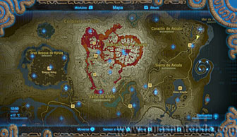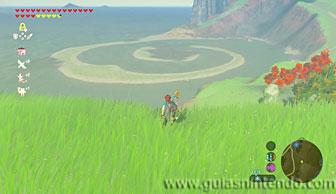
La esfera se encuentra al comienzo de la espiral, entre unas ruinas.
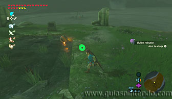
Lo mejor es que primero limpies el camino de enemigos y después recorras toda la espiral andando. Hay varios tipos de enemigos, si robas un caballo a alguno de ellos podrá facilitarte la tarea.
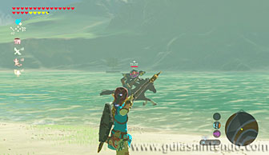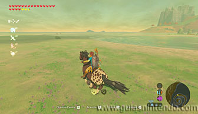
Si te resulta más fácil puedes moverte por el agua con una balsa que encuentras en un lateral (moviéndola con una Hoja de kolog) aunque también hay enemigos por el agua. Incluso, puedes usar los bloques de hielo para atravesar el agua sin necesidad de tener que ir montado en la balsa.
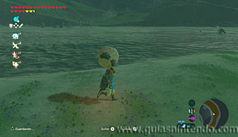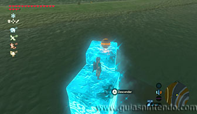
Cuando estés en la zona central verás una columna caída sobre el agua que te lleva directamente a la zona donde se encuentra el santuario.
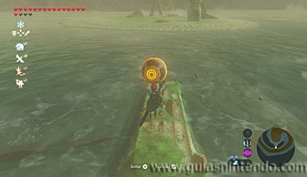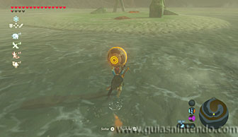
Cuando coloques la esfera en su lugar aparecerá la entrada y se completará la prueba heroica.
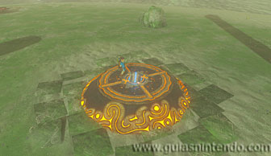
Dentro podrás abrir el cofre que contiene una Gran núcleo ancestral. Después dirígete al altar para conseguir el símbolo de valía correspondiente.
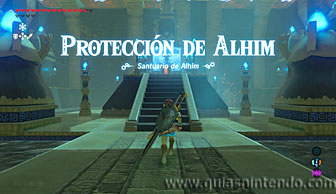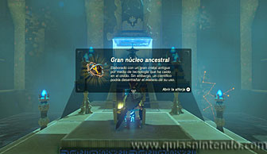